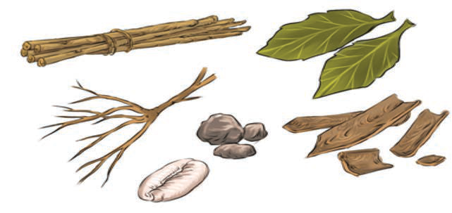

Sayansi na teknolojia ya tiba za asili
Sayansi na teknolojia ya tiba ya asili zilitofautiana kutoka jamii moja na nyingine. Sayansi na teknolojia ya tiba za asili zilitumia mimea na wanyama ili kutayarisha dawa. Sehemu ya mimea iliyotumika ni mizizi, mbegu, majani, magome ya miti na maua. Kielelezo namba 26, kinawasilisha baadhi ya sehemu za mimea na wanyama zilizotumika kutengeneza dawa za asili.

Sehemu kubwa ya mimea hii ilipatikana katika mazingira ya jamii husika. Sayansi na teknolojia ya utayarishaji dawa ilifanyika kwa kuchukua mmea husika, kisha kuuchemsha, kuukausha, kuuponda, kuutwanga, kuusaga, kuuchoma, au kuukwangua ili kupata dawa. Pia, mmea ulichanganywa na maji, uji au supu na kuchemshwa ili kupata dawa. Sayansi na teknolojia ya asili ya utengenezaji dawa ilitumika ili kuifanya mitishamba hiyo iweze kutibu kwa njia mbalimbali.
Dawa zilizotengenezwa kutokana na wanyama zilipatikana kwa kuchemsha na kuchuja mafuta kutoka katika nyama yenye mafuta, na mafuta hayo kutumika kama tiba. Pia, nyama ilichemshwa ili kupata supu, ambayo ilitumika kama dawa.
Matumizi ya dawa yalitegemea aina ya dawa na ugonjwa husika. Zipo dawa zilizotumika kama vimiminika baada ya kuchemshwa na nyingine zilitumika katika hali ya unga. Dawa zilizochomwa zilitumika katika hali ya majivu au mkaa.